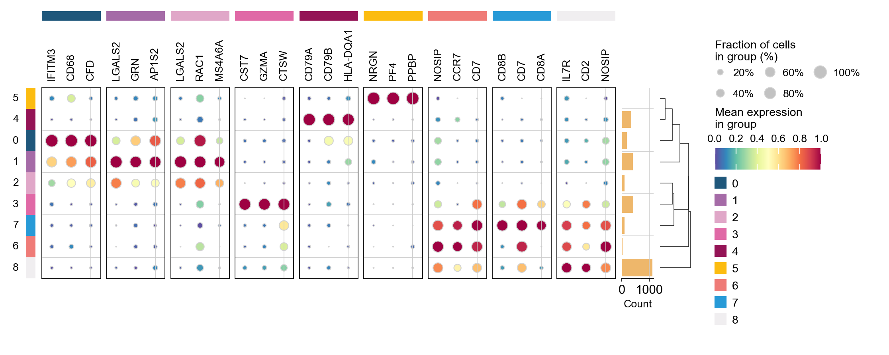
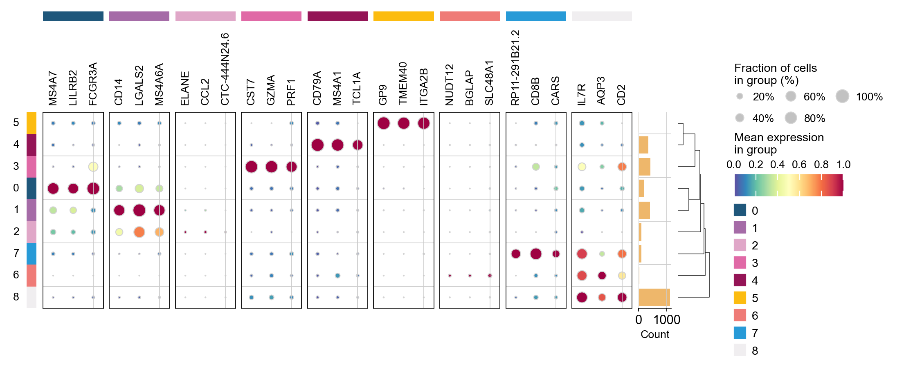

Preprocessing the data of scRNA-seq with omicverse[GPU]¶
Note
“Due to recent updates in rapids_singlecell, the pure-GPU version is currently unavailable. We plan to fix this in a future release and support datasets with tens of millions of cells.”
The count table, a numeric matrix of genes × cells, is the basic input data structure in the analysis of single-cell RNA-sequencing data. A common preprocessing step is to adjust the counts for variable sampling efficiency and to transform them so that the variance is similar across the dynamic range.
Suitable methods to preprocess the scRNA-seq is important. Here, we introduce some preprocessing step to help researchers can perform downstream analysis easyier.
User can compare our tutorial with scanpy’tutorial to learn how to use omicverse well
Installation¶
Note that the GPU module is not directly present and needs to be installed separately, for a detailed tutorial see https://rapids-singlecell.readthedocs.io/en/latest/index.html
conda-env¶
Note that in order to avoid conflicts, you’d better follow the step of installation.
#1. create a new conda env
conda create -n rapids python=3.11
#2. install rapids using conda
conda install rapids=24.04 -c rapidsai -c conda-forge -c nvidia -y
#3. install cuml
conda install cudf=24.04 cuml=24.04 cugraph=24.04 cuxfilter=24.04 cucim=24.04 pylibraft=24.04 raft-dask=24.04 cuvs=24.04 -c rapidsai -c conda-forge -c nvidia -y
#4. install rapid_single_cell
pip install rapids-singlecell
#5. install omicverse
curl -sSL https://raw.githubusercontent.com/Starlitnightly/omicverse/refs/heads/master/install.sh | bash -s
Here, we install the rapids==24.04, that’s because our system’s glibc<2.28. You can follow the official tutorial to install the latest version of rapids.
import scanpy as sc
import omicverse as ov
ov.plot_set(font_path='Arial')
# Enable auto-reload for development
%load_ext autoreload
%autoreload 2
🔬 Starting plot initialization...
Downloading Arial font from GitHub...
Arial font downloaded successfully to: /tmp/omicverse_arial.ttf
Registered as: Arial
🧬 Detecting CUDA devices…
✅ [GPU 0] NVIDIA H100 80GB HBM3
• Total memory: 79.1 GB
• Compute capability: 9.0
____ _ _ __
/ __ \____ ___ (_)___| | / /__ _____________
/ / / / __ `__ \/ / ___/ | / / _ \/ ___/ ___/ _ \
/ /_/ / / / / / / / /__ | |/ / __/ / (__ ) __/
\____/_/ /_/ /_/_/\___/ |___/\___/_/ /____/\___/
🔖 Version: 1.7.6rc1 📚 Tutorials: https://omicverse.readthedocs.io/
✅ plot_set complete.
ov.settings.gpu_init()
GPU mode activated
The data consist of 3k PBMCs from a Healthy Donor and are freely available from 10x Genomics (here from this webpage). On a unix system, you can uncomment and run the following to download and unpack the data. The last line creates a directory for writing processed data.
# !mkdir data
#!wget http://cf.10xgenomics.com/samples/cell-exp/1.1.0/pbmc3k/pbmc3k_filtered_gene_bc_matrices.tar.gz -O data/pbmc3k_filtered_gene_bc_matrices.tar.gz
#!cd data; tar -xzf pbmc3k_filtered_gene_bc_matrices.tar.gz
# !mkdir write
adata = sc.read_10x_mtx(
'data/filtered_gene_bc_matrices/hg19/', # the directory with the `.mtx` file
var_names='gene_symbols', # use gene symbols for the variable names (variables-axis index)
cache=True) # write a cache file for faster subsequent reading
adata
... reading from cache file cache/data-filtered_gene_bc_matrices-hg19-matrix.h5ad
AnnData object with n_obs × n_vars = 2700 × 32738
var: 'gene_ids'
adata.var_names_make_unique()
adata.obs_names_make_unique()
Preprocessing¶
Quantity control¶
For single-cell data, we require quality control prior to analysis, including the removal of cells containing double cells, low-expressing cells, and low-expressing genes. In addition to this, we need to filter based on mitochondrial gene ratios, number of transcripts, number of genes expressed per cell, cellular Complexity, etc. For a detailed description of the different QCs please see the document: https://hbctraining.github.io/scRNA-seq/lessons/04_SC_quality_control.html
ov.pp.anndata_to_GPU(adata)
Data has been moved to GPU
Don`t forget to move it back to CPU after analysis is done
Use `ov.pp.anndata_to_CPU(adata)`
%%time
adata=ov.pp.qc(adata,
tresh={'mito_perc': 0.2, 'nUMIs': 500, 'detected_genes': 250},
batch_key=None)
adata
🚀 Using RAPIDS GPU to calculate QC...
🔍 Quality Control Analysis (GPU-Accelerated):
Dataset shape: 2,700 cells × 32,738 genes
QC mode: seurat
Doublet detection: scrublet
Mitochondrial genes: MT-
🚀 Loading data to GPU...
📊 Step 1: Calculating QC Metrics
Mitochondrial genes (prefix 'MT-'): 13 found
✓ QC metrics calculated:
• Mean nUMIs: 2367 (range: 548-15844)
• Mean genes: 847 (range: 212-3422)
• Mean mitochondrial %: 2.2% (max: 22.6%)
📈 Original cell count: 2,700
🔧 Step 2: Quality Filtering (SEURAT)
Thresholds: mito≤0.2, nUMIs≥500, genes≥250
📊 Seurat Filter Results:
• nUMIs filter (≥500): 0 cells failed (0.0%)
• Genes filter (≥250): 3 cells failed (0.1%)
• Mitochondrial filter (≤0.2): 2 cells failed (0.1%)
✓ Combined QC filters: 5 cells removed (0.2%)
🎯 Step 3: Final Filtering
Parameters: min_genes=200, min_cells=3
Ratios: max_genes_ratio=1, max_cells_ratio=1
filtered out 18972 genes that are detected in less than 3 counts
filtered out 263 genes that are detected in more than 2695 counts
✓ Final filtering: 0 cells, 19,235 genes removed
🔍 Step 4: Doublet Detection
🔍 Running GPU-accelerated scrublet...
Running Scrublet
Embedding transcriptomes using PCA...
Automatically set threshold at doublet score = 0.37
Detected doublet rate = 0.2%
Estimated detectable doublet fraction = 6.3%
Overall doublet rate:
Expected = 5.0%
Estimated = 3.6%
Scrublet finished (0:01:07)
✓ Scrublet completed: 6 doublets removed (0.2%)
✅ GPU Quality Control Analysis Completed!
📈 Final Summary:
📊 Original: 2,700 cells × 32,738 genes
✓ Final: 2,689 cells × 13,503 genes
📉 Total removed: 11 cells (0.4%)
📉 Total removed: 19,235 genes (58.8%)
💯 Quality: 99.6% retention (Excellent retention rate)
────────────────────────────────────────────────────────────
CPU times: user 8.5 s, sys: 1.01 s, total: 9.51 s
Wall time: 2min 35s
AnnData object with n_obs × n_vars = 2689 × 13503
obs: 'n_genes_by_counts', 'total_counts', 'log1p_n_genes_by_counts', 'log1p_total_counts', 'total_counts_mt', 'pct_counts_mt', 'log1p_total_counts_mt', 'nUMIs', 'mito_perc', 'detected_genes', 'cell_complexity', 'passing_mt', 'passing_nUMIs', 'passing_ngenes', 'n_counts', 'n_genes', 'doublet_score', 'predicted_doublet'
var: 'gene_ids', 'mt', 'n_cells_by_counts', 'total_counts', 'mean_counts', 'pct_dropout_by_counts', 'log1p_total_counts', 'log1p_mean_counts', 'n_counts', 'n_cells'
uns: 'scrublet', 'status'
High variable Gene Detection¶
Here we try to use Pearson’s method to calculate highly variable genes. This is the method that is proposed to be superior to ordinary normalisation. See Article in Nature Method for details.
normalize|HVGs：We use | to control the preprocessing step, | before for the normalisation step, either shiftlog or pearson, and | after for the highly variable gene calculation step, either pearson or seurat. Our default is shiftlog|pearson.
if you use
mode=shiftlog|pearsonyou need to settarget_sum=50*1e4, more people like to setarget_sum=1e4, we test the result think 50*1e4 will be betterif you use
mode=pearson|pearson, you don’t need to settarget_sum
Note
if the version of omicverse lower than 1.4.13, the mode can only be set between scanpy and pearson.
%%time
adata=ov.pp.preprocess(adata,mode='shiftlog|pearson',n_HVGs=2000,)
adata
Begin robust gene identification
After filtration, 13503/13503 genes are kept. Among 13503 genes, 13503 genes are robust.
End of robust gene identification.
Begin size normalization: shiftlog and HVGs selection pearson
Time to analyze data in gpu: 6.483870506286621 seconds.
End of size normalization: shiftlog and HVGs selection pearson
CPU times: user 4.87 s, sys: 431 ms, total: 5.3 s
Wall time: 6.49 s
AnnData object with n_obs × n_vars = 2689 × 13503
obs: 'n_genes_by_counts', 'total_counts', 'log1p_n_genes_by_counts', 'log1p_total_counts', 'total_counts_mt', 'pct_counts_mt', 'log1p_total_counts_mt', 'nUMIs', 'mito_perc', 'detected_genes', 'cell_complexity', 'passing_mt', 'passing_nUMIs', 'passing_ngenes', 'n_counts', 'n_genes', 'doublet_score', 'predicted_doublet'
var: 'gene_ids', 'mt', 'n_cells_by_counts', 'total_counts', 'mean_counts', 'pct_dropout_by_counts', 'log1p_total_counts', 'log1p_mean_counts', 'n_counts', 'n_cells', 'robust', 'means', 'variances', 'residual_variances', 'highly_variable_rank', 'highly_variable_features'
uns: 'scrublet', 'status', 'log1p', 'hvg', 'status_args', 'REFERENCE_MANU'
layers: 'counts'
Set the .raw attribute of the AnnData object to the normalized and logarithmized raw gene expression for later use in differential testing and visualizations of gene expression. This simply freezes the state of the AnnData object.
adata.raw = adata
adata = adata[:, adata.var.highly_variable_features]
adata
View of AnnData object with n_obs × n_vars = 2689 × 2000
obs: 'n_genes_by_counts', 'total_counts', 'log1p_n_genes_by_counts', 'log1p_total_counts', 'total_counts_mt', 'pct_counts_mt', 'log1p_total_counts_mt', 'nUMIs', 'mito_perc', 'detected_genes', 'cell_complexity', 'passing_mt', 'passing_nUMIs', 'passing_ngenes', 'n_counts', 'n_genes', 'doublet_score', 'predicted_doublet'
var: 'gene_ids', 'mt', 'n_cells_by_counts', 'total_counts', 'mean_counts', 'pct_dropout_by_counts', 'log1p_total_counts', 'log1p_mean_counts', 'n_counts', 'n_cells', 'robust', 'means', 'variances', 'residual_variances', 'highly_variable_rank', 'highly_variable_features'
uns: 'scrublet', 'status', 'log1p', 'hvg', 'status_args', 'REFERENCE_MANU'
layers: 'counts'
Principal component analysis¶
In contrast to scanpy, we do not directly scale the variance of the original expression matrix, but store the results of the variance scaling in the layer, due to the fact that scale may cause changes in the data distribution, and we have not found scale to be meaningful in any scenario other than a principal component analysis
%%time
ov.pp.scale(adata)
adata
CPU times: user 218 ms, sys: 12 ms, total: 230 ms
Wall time: 271 ms
AnnData object with n_obs × n_vars = 2689 × 2000
obs: 'n_genes_by_counts', 'total_counts', 'log1p_n_genes_by_counts', 'log1p_total_counts', 'total_counts_mt', 'pct_counts_mt', 'log1p_total_counts_mt', 'nUMIs', 'mito_perc', 'detected_genes', 'cell_complexity', 'passing_mt', 'passing_nUMIs', 'passing_ngenes', 'n_counts', 'n_genes', 'doublet_score', 'predicted_doublet'
var: 'gene_ids', 'mt', 'n_cells_by_counts', 'total_counts', 'mean_counts', 'pct_dropout_by_counts', 'log1p_total_counts', 'log1p_mean_counts', 'n_counts', 'n_cells', 'robust', 'means', 'variances', 'residual_variances', 'highly_variable_rank', 'highly_variable_features'
uns: 'scrublet', 'status', 'log1p', 'hvg', 'status_args', 'REFERENCE_MANU'
layers: 'counts', 'scaled'
If you want to perform pca in normlog layer, you can set layer=normlog, but we think scaled is necessary in PCA.
%%time
ov.pp.pca(adata,layer='scaled',n_pcs=50)
adata
CPU times: user 24.8 ms, sys: 6.95 ms, total: 31.7 ms
Wall time: 31.5 ms
AnnData object with n_obs × n_vars = 2689 × 2000
obs: 'n_genes_by_counts', 'total_counts', 'log1p_n_genes_by_counts', 'log1p_total_counts', 'total_counts_mt', 'pct_counts_mt', 'log1p_total_counts_mt', 'nUMIs', 'mito_perc', 'detected_genes', 'cell_complexity', 'passing_mt', 'passing_nUMIs', 'passing_ngenes', 'n_counts', 'n_genes', 'doublet_score', 'predicted_doublet'
var: 'gene_ids', 'mt', 'n_cells_by_counts', 'total_counts', 'mean_counts', 'pct_dropout_by_counts', 'log1p_total_counts', 'log1p_mean_counts', 'n_counts', 'n_cells', 'robust', 'means', 'variances', 'residual_variances', 'highly_variable_rank', 'highly_variable_features'
uns: 'scrublet', 'status', 'log1p', 'hvg', 'status_args', 'REFERENCE_MANU', 'pca', 'scaled|original|pca_var_ratios', 'scaled|original|cum_sum_eigenvalues'
obsm: 'X_pca', 'scaled|original|X_pca'
varm: 'PCs', 'scaled|original|pca_loadings'
layers: 'counts', 'scaled'
adata.obsm['X_pca']=adata.obsm['scaled|original|X_pca']
ov.pl.embedding(adata,
basis='X_pca',
color='S100B',
frameon='small')
{kind=link}
Embedding the neighborhood graph¶
We suggest embedding the graph in two dimensions using UMAP (McInnes et al., 2018), see below. It is potentially more faithful to the global connectivity of the manifold than tSNE, i.e., it better preserves trajectories. In some ocassions, you might still observe disconnected clusters and similar connectivity violations. They can usually be remedied by running:
%%time
ov.pp.neighbors(adata, n_neighbors=15, n_pcs=50,
use_rep='scaled|original|X_pca',
method='cagra')
🚀 Using RAPIDS GPU to calculate neighbors...
CPU times: user 2.52 s, sys: 164 ms, total: 2.69 s
Wall time: 19 s
To visualize the PCA’s embeddings, we use the pymde package wrapper in omicverse. This is an alternative to UMAP that is GPU-accelerated.
adata.obsm["X_mde"] = ov.utils.mde(adata.obsm["scaled|original|X_pca"])
adata
AnnData object with n_obs × n_vars = 2689 × 2000
obs: 'n_genes_by_counts', 'total_counts', 'log1p_n_genes_by_counts', 'log1p_total_counts', 'total_counts_mt', 'pct_counts_mt', 'log1p_total_counts_mt', 'nUMIs', 'mito_perc', 'detected_genes', 'cell_complexity', 'passing_mt', 'passing_nUMIs', 'passing_ngenes', 'n_counts', 'n_genes', 'doublet_score', 'predicted_doublet'
var: 'gene_ids', 'mt', 'n_cells_by_counts', 'total_counts', 'mean_counts', 'pct_dropout_by_counts', 'log1p_total_counts', 'log1p_mean_counts', 'n_counts', 'n_cells', 'robust', 'means', 'variances', 'residual_variances', 'highly_variable_rank', 'highly_variable_features'
uns: 'scrublet', 'status', 'log1p', 'hvg', 'status_args', 'REFERENCE_MANU', 'pca', 'scaled|original|pca_var_ratios', 'scaled|original|cum_sum_eigenvalues', 'neighbors'
obsm: 'X_pca', 'scaled|original|X_pca', 'X_mde'
varm: 'PCs', 'scaled|original|pca_loadings'
layers: 'counts', 'scaled'
obsp: 'distances', 'connectivities'
ov.pl.embedding(adata,
basis='X_mde',
color='S100B',
frameon='small')
{kind=link}
You also can use umap to visualize the neighborhood graph
ov.pp.umap(adata)
🔍 [2025-08-02 20:10:38] Running UMAP in 'gpu' mode...
🚀 Using RAPIDS GPU UMAP...
✅ UMAP completed successfully.
ov.pl.embedding(adata,
basis='X_umap',
color='S100B',
frameon='small')
{kind=link}
Clustering the neighborhood graph¶
As with Seurat and many other frameworks, we recommend the Leiden graph-clustering method (community detection based on optimizing modularity) by Traag et al. (2018). Note that Leiden clustering directly clusters the neighborhood graph of cells, which we already computed in the previous section.
ov.pp.leiden(adata)
🚀 Using RAPIDS GPU to calculate Leiden...
ov.pp.anndata_to_CPU(adata)
for i in adata.raw.var_names:
if 'CD' in i:
print(i)
CDK11B
CDK11A
PIK3CD
CDA
CDC42
SPOCD1
CCDC28B
NCDN
CDCA8
CCDC30
CCDC23
CDC20
CCDC24
CCDC163P
CDKN2C
CDC7
CCDC18
ABCD3
CDC14A
CD53
CD58
CD2
CD101
CD160
CDC42SE1
C2CD4D
CD1D
CD1A
CD1C
CD1B
CD1E
CD84
CD244
CD247
CDC73
CDK18
CD55
CD46
CCDC121
CDC42EP3
CCDC88A
CCDC104
CCDC142
PTCD3
CD8A
CD8B
CCDC138
CCDC93
CCDC115
CD302
CDCA7
CCDC141
FTCDNL1
CD28
RQCD1
PDCD1
FANCD2
CCDC174
PDCD6IP
PLCD1
CCDC13
CCDC12
CDC25A
CCDC51
CCDC71
PRKCD
CCDC66
CD47
CD96
CD200
CD200R1
CD86
CCDC58
CCDC14
CDV3
PDCD10
TBCCD1
CCDC50
CCDC96
CD38
CCDC149
SCD5
GSTCD
CCDC109B
CDKN2AIP
CCDC127
PDCD6
CCDC152
CD180
CDK7
CCDC125
PTCD2
CCDC112
CDC42SE2
CDKL3
CDKN2AIPNL
CDC23
CD14
CCDC69
NUDCD2
CDYL
CD83
CDKAL1
CDKN1A
CCDC167
CDC5L
CD2AP
CD164
CDC40
CDK19
CCDC28A
PDCD2
CDCA7L
CCDC126
CDK13
NUDCD3
CCDC146
CD36
CDK14
CDK6
CCDC132
PTCD1
CDHR3
CCDC71L
CCDC136
CDK5
SMARCD3
CD99
CDKL5
CDK16
CCDC120
CCDC22
CD40LG
CD99L2
ABCD1
CCDC25
NUDCD1
CCDC26
CDC37L1
CD274
CDKN2A
CDKN2B
CD72
CCDC107
CDK20
BICD2
CDC14B
CCDC180
CDC26
CDK5RAP2
CDK9
FIBCD1
CCDC183
SAPCD2
CDC123
CCDC3
CDNF
CCDC7
CCDC6
CDK1
CDH23
ECD
SCD
DPCD
PDCD11
PDCD4-AS1
PDCD4
CD151
CD81
CDKN1C
PRKCDBP
CCDC34
CCDC73
CD59
CD44
CD82
CCDC86
CD6
CD5
CCDC88B
CDCA5
CDC42EP2
CCDC85B
CD248
CDK2AP2
C2CD3
CCDC90B
CCDC82
CD3G
CCDC84
C2CD2L
CCDC153
CCDC15
CDON
CCDC77
CD9
CD27-AS1
CD27
CD4
CDCA3
CD163
AICDA
CD69
CDKN1B
C2CD5
CCDC91
BICD1
ABCD2
CCDC65
BCDIN3D
SMARCD1
CD63
CDK2
CDK4
CCDC59
CCDC41
CDK17
CCDC53
FICD
CCDC64
CCDC62
CDK2AP1
CCDC92
CDK8
CCDC122
CDADC1
PCDH9
CDC16
CDKL1
CDKN3
CCDC176
ABCD4
CCDC88C
CCDC85C
CDC42BPB
CDCA4
CDAN1
PDCD7
PPCDC
RCCD1
CCDC78
CCDC154
BRICD5
CDIP1
CDR2
CCDC101
CD19
CDIPT
CD2BP2
CCDC102A
ACD
CDH1
CDYL2
MLYCD
CDT1
CDK10
CD68
TLCD1
CDK5R1
CDK12
CDC6
CCDC43
CDC27
CDK5RAP3
CCDC47
SMARCD2
CD79B
CDC42EP4
CD300A
CD300LB
CD300C
CD300E
CD300LF
CDK3
PRCD
CCDC137
CCDC57
CD7
TBCD
CDH20
CCDC102B
CD226
CDC25B
CDS2
CD93
CDK5RAP1
CD40
NELFCD
CDH26
CDC34
CCDC94
CD70
CD320
CDC37
CDKN2D
CCDC159
CCDC151
GCDH
CCDC130
CD97
CCDC124
PDCD5
PDCD2L
CD22
CCDC97
CD79A
CD3EAP
CCDC61
CCDC9
CD33
CCDC106
CDC45
GUCD1
CCDC117
CCDC157
CDC42EP1
CCDC134
CDPF1
C2CD2
We redesigned the visualisation of embedding to distinguish it from scanpy’s embedding by adding the parameter fraemon='small', which causes the axes to be scaled with the colourbar
ov.pl.embedding(adata,
basis='X_mde',
color=['leiden', 'S100B', 'CD8A'],
frameon='small')
{kind=link}
We also provide a boundary visualisation function ov.utils.plot_ConvexHull to visualise specific clusters.
Arguments:
color: if None will use the color of clusters
alpha: default is 0.2
import matplotlib.pyplot as plt
fig,ax=plt.subplots( figsize = (4,4))
ov.pl.embedding(adata,
basis='X_mde',
color=['leiden'],
frameon='small',
show=False,
ax=ax)
ov.pl.ConvexHull(adata,
basis='X_mde',
cluster_key='leiden',
hull_cluster='0',
ax=ax)
{kind=link}
If you have too many labels, e.g. too many cell types, and you are concerned about cell overlap, then consider trying the ov.utils.gen_mpl_labels function, which improves text overlap.
In addition, we make use of the patheffects function, which makes our text have outlines
adjust_kwargs: it could be found in package
adjusttexttext_kwargs: it could be found in class
plt.texts
from matplotlib import patheffects
import matplotlib.pyplot as plt
fig, ax = plt.subplots(figsize=(4,4))
ov.pl.embedding(adata,
basis='X_mde',
color=['leiden'],
show=False, legend_loc=None, add_outline=False,
frameon='small',legend_fontoutline=2,ax=ax
)
ov.utils.gen_mpl_labels(
adata,
'leiden',
exclude=("None",),
basis='X_mde',
ax=ax,
adjust_kwargs=dict(arrowprops=dict(arrowstyle='-', color='black')),
text_kwargs=dict(fontsize= 12 ,weight='bold',
path_effects=[patheffects.withStroke(linewidth=2, foreground='w')] ),
)
{kind=link}
marker_genes = ['IL7R', 'CD79A', 'MS4A1', 'CD8A', 'CD8B', 'CD14',
'LGALS3', 'KLRB1',
'FCGR3A', 'MS4A7', 'FCER1A', 'PPBP']
ov.pl.dotplot(adata, marker_genes, groupby='leiden',
standard_scale='var');
{kind=link}
Finding marker genes¶
Let us compute a ranking for the highly differential genes in each cluster. For this, by default, the .raw attribute of AnnData is used in case it has been initialized before. The simplest and fastest method to do so is the t-test.
sc.tl.dendrogram(adata,'leiden',use_rep='scaled|original|X_pca')
sc.tl.rank_genes_groups(adata, 'leiden', use_rep='scaled|original|X_pca',
method='t-test',use_raw=False,key_added='leiden_ttest')
ov.pl.rank_genes_groups_dotplot(adata,groupby='leiden',
cmap='Spectral_r',key='leiden_ttest',
standard_scale='var',n_genes=3)
Storing dendrogram info using `.uns['dendrogram_leiden']`
ranking genes
finished: added to `.uns['leiden_ttest']`
'names', sorted np.recarray to be indexed by group ids
'scores', sorted np.recarray to be indexed by group ids
'logfoldchanges', sorted np.recarray to be indexed by group ids
'pvals', sorted np.recarray to be indexed by group ids
'pvals_adj', sorted np.recarray to be indexed by group ids (0:00:00)
{kind=link}

cosg is also considered to be a better algorithm for finding marker genes. Here, omicverse provides the calculation of cosg
Paper: Accurate and fast cell marker gene identification with COSG
Code: https://github.com/genecell/COSG
sc.tl.rank_genes_groups(adata, groupby='leiden',
method='t-test',use_rep='scaled|original|X_pca',)
ov.single.cosg(adata, key_added='leiden_cosg', groupby='leiden')
ov.pl.rank_genes_groups_dotplot(adata,groupby='leiden',
cmap='Spectral_r',key='leiden_cosg',
standard_scale='var',n_genes=3)
ranking genes
finished: added to `.uns['rank_genes_groups']`
'names', sorted np.recarray to be indexed by group ids
'scores', sorted np.recarray to be indexed by group ids
'logfoldchanges', sorted np.recarray to be indexed by group ids
'pvals', sorted np.recarray to be indexed by group ids
'pvals_adj', sorted np.recarray to be indexed by group ids (0:00:00)
**finished identifying marker genes by COSG**
{kind=link}
